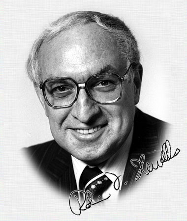

|
|
|
So, who IS Robin Howells?
Robin has worked for more than 45 years in the Communications business including extensive experience in Journalism in daily newspapers and magazines, Public Relations, Broadcasting, and Advertising. He held senior executive positions at The Herald, The Age, Newsday, Nation Review and the Victorian Farmer and was Victorian Manager of Australia’s first national media representation company, which represented Press, Radio and Television in all States. Highlights of his career include: |
|
|
Before retiring in 1998 he had been a member of the Australian Journalists' Association section of the Media, Entertainment and Arts Alliance and the Melbourne Press Club for nearly 25 years.
That’s all I’m going to tell you about myself. If you want to know more, you can read more about me elsewhere on the World Wide Web. I won’t tell you the URL, but if you find it send me a message and tell me how and where you found the information!


Content © 2002 Robin Howells
All rights reserved
design, layout and web authoring by